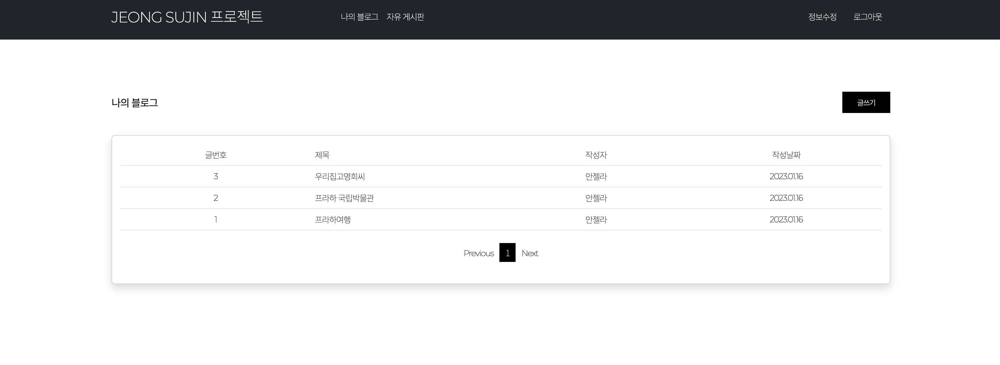
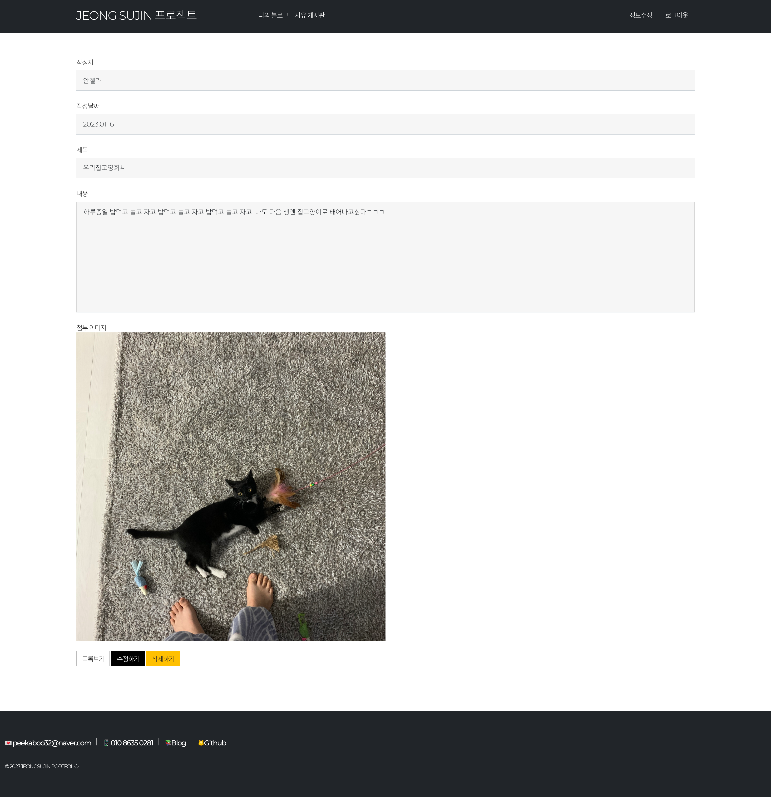

JEONGSUJIN PORTFOLIO
사람들과 소통하는 마음가짐과 긍적적인 사고를 하고 있으며, 창의적이고 진취적이고 성장하는 개발을 하는 것을 좋아합니다.
About
01-
01
Potential
도전하는 즐거움과 열정, 확장성과 다양한 경험으로 가능성을 직접 보여드리겠습니다 -
02
Ambition
목적에 집중하고, 완성도에 집착합니다.
장기적 관점의 자기계발을 위해 필요한 학습을 적극적으로 노력합니다. -
03
Value
상식이 통하는 사람, 합리적이고 공정한 대우와 존중과 함께
공간을 채워나가며 삶의 가치를 높이고자 합니다.
Project
02
"
PORTFOLIO
PORTFOLIO
PROJECT
가장 기본적인것을 제대로 할 줄 아는게 중요하다고 생각했습니다.
CRUD를 기반으로 MVC패턴으로 Mybatis를 사용한 스프링 레거시버전과
스프링부트 JPA, 팀프로젝트를 하면서 만든 프로젝트입니다
✖️
스프링 블로그 프로젝트
자바 MVC패턴 기반으로 bean 마이바티스를 이용한 블로그 게시판 입니다.
Bean 객체에 대한 개념과
Dto, Dao, Mapper, Service, Controller 로직을 복습하기 위해 프로젝트를 했습니다.

- 
- 
What I can do
03What I can do

주도적인 마음과 창의적인 생각을 가진 사람이 가장 강력한 인재라고 생각합니다.
경청할 자세와 성실함을 기본적으로 가지고 있으며, 주도적으로 자기계발을 하고 있습니다.
-
자바
- - 객체지향 프로그래밍에 대해 이해하고 있습니다.
- - Java에서 제공하는 클래스와 메소드를 적절하게 사용할 수 있습니다.
- - 자바의 기초를 공부하고 자료구조와 알고리즘을 자바기반으로 학습했습니다.
-
Spring & SpringBoot
- - Legacy Project를 이용하여 웹 애플리케이션 구현 경험
- - Mybatis 를 사용하여 웹개발을 사용해본적이 있습니다.
- - (With thymeleaf or JSP) : 사이드 프로젝트로 애플리케이션 구현 경험 있습니다.
- - Spring으로 REST API를 활용하여 웹 서비스를 개발하였습니다. 스프링 데이터 JPA를 활용하고 스프링 Security Oauth2를 사용해서 카카오 로그인을 구현했습니다.
- - JPA : 사이드 프로젝트로 애플리케이션 구현 경험 있습니다.
- - jQuery : Vanila JS와 같이 혼용하여 사용 경험 있습니다.
-
MySQL
- - MySQL의 기본 쿼리문을 활용하여 데이터베이스와 대화할 수 있습니다.
- - 테이블 CRUD 및 간단한 조인 등 프로젝트를 통해 사용 경험 있습니다.
-
형상관리 툴
- - Git : CLI 에서 commit 및 원격저장소(GitHub로 push)
- - GitHub : 팀프로젝트 시 사용해 보기
- - Gitkraken : GUI 사용 경험이 있습니다.
-
OAuth2.0
- - 카카오 로그인 API 연동
-
AWS
- - 아마존 AWS를 활용해서 웹 서비스를 배포한 경험이 있습니다.
- - EC2 가상 ,RDS(MySQLDB)를 사용해봤습니다.